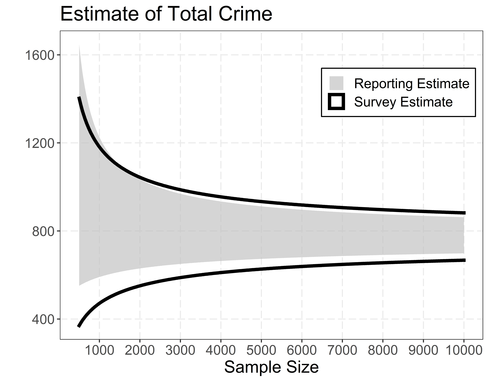
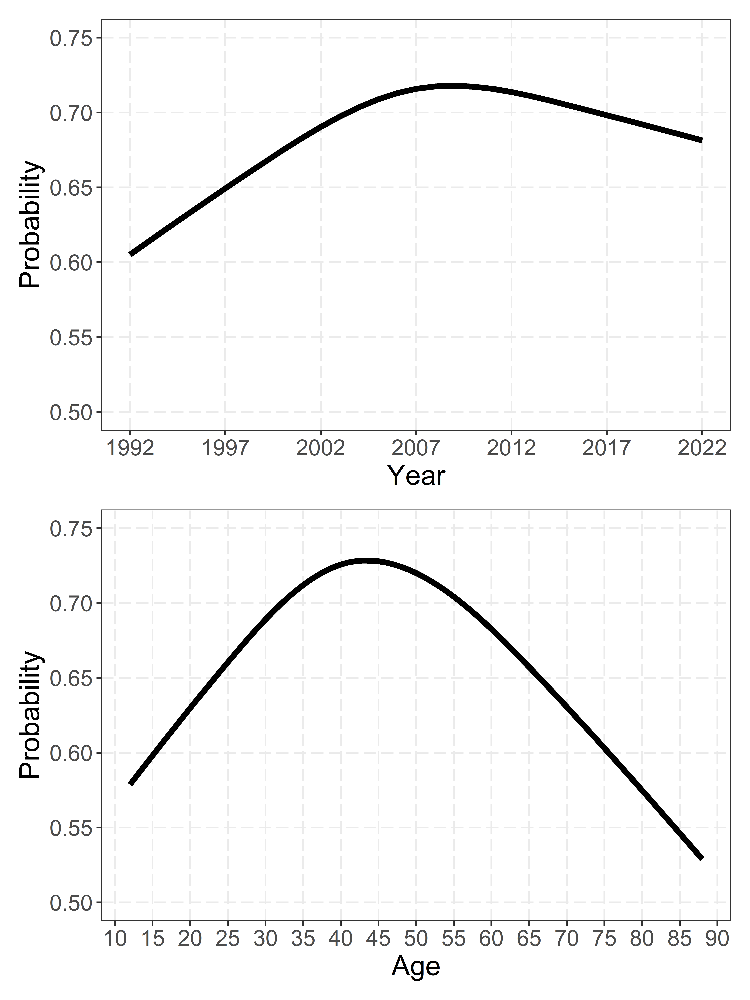
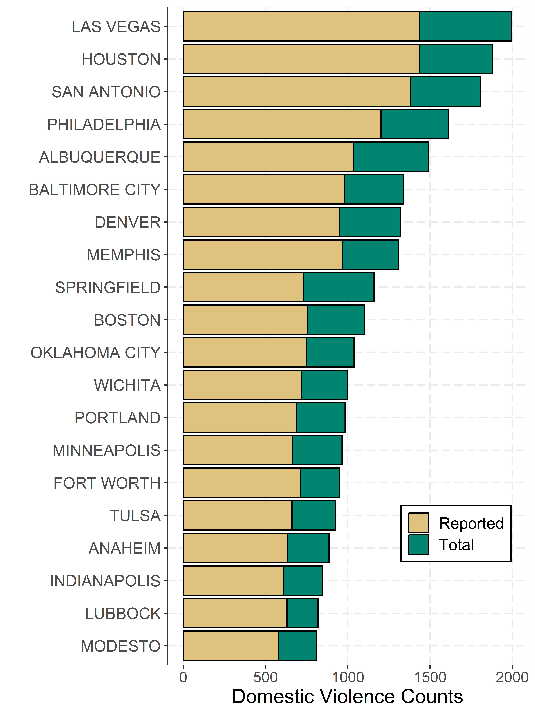
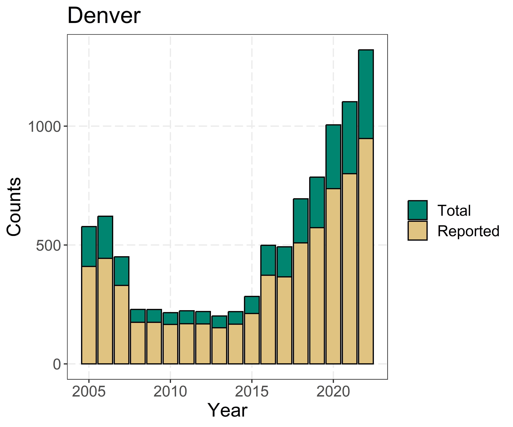
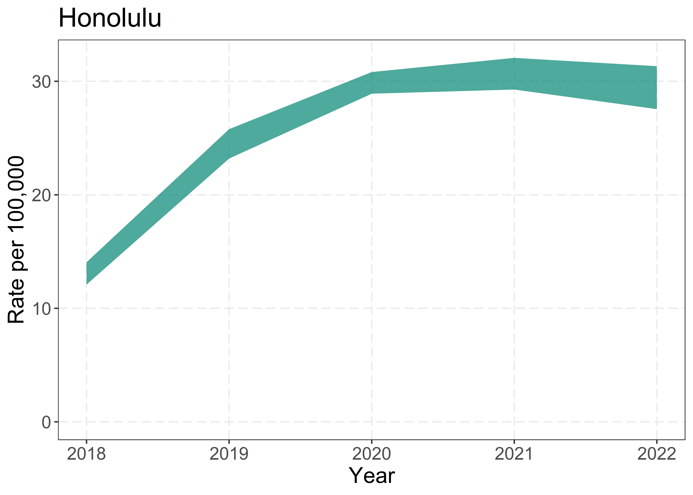

Using Victimization Reporting Rates to Estimate the Dark Figure of Domestic Violence
Background
When analyzing crimes reported to police, an ever-present problem is whether characteristics of those reported crimes reflect the true underlying distribution of those crimes. Or if any of the observed patterns are merely reflective of changing patterns of reporting rates over time.
Traditionally criminologists have addressed this via victimization surveys – asking individuals if they have been victimized. The National Crime Victimization Survey (NCVS) is one such survey in the United States (Lauritsen and Rezey 2013). In a year, the NCVS may interview over 40,000 households and 70,000 individuals. Despite being an incredibly large sized survey, generating sub national level estimates is still a challenge. Most of the work is on state level estimates (Fay, Planty, and Diallo 2013), although some are for metro areas or specific cities (Rezey and Lauritsen 2023). Here we will propose a methodology that can more easily generate city (or even sub-city) level results.
Here we show how one can leverage reported crimes, along with estimated reporting rates of victimization to the police, to produce local estimates of the dark figure of crime. This case study we focus on aggravated domestic violence, although the methodology could be extended to other crime types in future work.
Mathematical Model
We start with two identities, first:
\[T = R + N\]
Where \(T\) is the total number of crimes, \(R\) is the count of reported crimes, and \(N\) is the count of non-reported crimes. Second, we have:
\[p = \frac{R}{T} = \frac{R}{R + N}\]
Where \(p\) is the probability of reporting the crime to the police, aka the reporting rate. Here crimes are specifically aggravated domestic violent victimization’s, but the mathematical presentation is generic and not specific to only domestic violence.
The main contribution of this work is that you can estimate \(T\), the total number of crimes, via the observed number of crime reports \(R\), and an estimate of the probability of reporting, what we denote as \(\hat{p}\). So we may wish to estimate two different quantities. First one can estimate \(N\) via:
\[\hat{N} = \frac{R\cdot(1-\hat{p})}{\hat{p}}\]
But here we mostly focus on estimating \(\hat{T}\) via:
\[\hat{T} = R + \frac{R \cdot (1-\hat{p})}{\hat{p}}\] \[\hat{T} = R/\hat{p}\]
So if you had a city with 500 reported crimes, and the reporting rate estimate for that crime is 40%, the estimate for the total number of crimes in that city is \(500/0.4 = 1,250\)
Here we suggest to use the NCVS to estimate \(\hat{p}\). One can observe \(R\) via a specific police jurisdictions reporting, such as via the National Incident Based Reporting System (NIBRS).
This somewhat begs the question of why not use NCVS to estimate \(\hat{T}\) directly. In practice if one wants an estimate for a specific city, e.g. I want to know how many total crimes are in Dallas, even given the size of NCVS there are unlikely enough surveys of a particular city to generate reasonably accurate estimate. One however can take the reporting rate from the NCVS, and it is likely a reasonable estimate for the reporting rate for a specific jurisdiction (Rezey and Lauritsen 2023).
If one is willing to run a survey for a specific jurisdiction, it hinges on whether the standard error around \(\hat{p}\) versus \(\hat{T}\) to determine which estimate you would prefer. There are scenarios where either could be true. For rare crimes, both will require very large sample sizes to get reasonably accurate estimates. Figure 1 shows a simulated example where the reporting rate estimator has a smaller confidence interval once you eclipse a total of 2,000 surveys.1
In practice conducting this exercise filling in reasonable values for victimization rates and reporting rates, they both tend to be very similar in terms of overall crime estimates. And one may even be able to construct a more accurate estimate by combining both (the reporting rate estimate has a better lower bound). But given we are not working with individual city surveys, we leave that to future researchers.
One could use the overall reporting rate for the entire NCVS to up-adjust observed NIBRS counts in a specific jurisdiction. But there is a more bespoke way to take into account differential composition of the crime reporting demographics for a particular jurisdiction. Consider a breakdown of our total crime estimate into sub-estimates \(a\) and \(b\).
\[\hat{T}_a = R_a/\hat{p}_a\] \[\hat{T}_b = R_b/\hat{p}_b\]
Where our estimate of total crime is \(\hat{T} = \sum_{i=1}^{k}\hat{T}_k\) for each \(k\) subset.
Pretend that the subgroups are older and younger victims, and that younger victims have a higher victimization reporting rate. If one city has a larger number of older victims, they should have a higher adjustment. In practice, one can extend this so that every individual reported crime has its own probability estimate of reporting to the police. That is, we have:
\[\hat{T}_i = R_i/\hat{p}_i\]
Where \(i\) can index all the different characteristics for an individual reported crime. We took as motivation for this the literature on post-stratification (Circo and Wheeler 2023). In that literature, the post-stratification weights are typically taken from census demographics, here the post-stratification weights though are taken from the NIRBS reporting data.
Here we estimate \(\hat{p}_i\), the reporting rate for aggravated domestic violent assaults using a logistic regression for NCVS using:
\[g(\hat{p}_i) = \beta_0 + \beta_1\text{Female} + \beta_2\text{Hispanic} + \Sigma\beta_k s(\text{Year}_k) + \Sigma\beta_l s(\text{Age}_l) +\] \[\Sigma\beta_g\text{Race}_g + \Sigma\beta_h\text{Region}_h + \Sigma\beta_i\text{PopGroup}_i\]
Where the \(g\) is the logit function. The model does not include sampling weights in its estimates. Those are typically not included in regression modeling, only for estimating national level rates (Powers and Bleeker 2023). The sample is restricted to all those victims who reported having an aggravated domestic violent incident.
The variables included in the logistic regression on the right hand side are whether the victim is female, Hispanic, their racial group (Asian/Pacific Islander, Black, Native American, Two or more races, with white as the reference group), and geographic region (Northeast, Midwest, South, West). For the NCVS, region was only included post 1994, and so for earlier years we use the missing region as the reference category in the regression. For population groups, we include variables for cities of 50,000 to 250,000, another category for over 250,000, and the reference group of cities under 50,000 population.
The model also includes non-linear restricted cubic spline terms for the victim’s age (with knots at 25, 40, and 65), and year spline variables (with knots at 1999, 2007, 2015). Restricted cubic splines typically have better tail behavior than polynomial terms (Harrell et al. 2001).
It is necessary to use variables that are available in both NCVS and NIBRS to conduct such an analysis, but one can use different methods of estimating \(\hat{p}_i\), such as machine learning. Here we use logistic regression, as in the authors experience the sample size is too small to reliably use non-linear machine learning models, such as random forest or boosted regression models (Circo and Wheeler 2022). It is also the case that when using generalized linear models, one has an estimate of the standard error of \(\hat{p}_i\), which we use in further data visualizations.
We use the open source library R to conduct statistical analysis and the library ggplot2 to create graphs (R Core Team 2022; Wickham 2016). Replication results can be seen at https://github.com/apwheele/dvtrends. Data used for the analysis is the concatenated NCVS file, and the NIBRS concatenated files provided by Jacob Kaplan (Kaplan 2024; Justice Statistics 2023).
Results
Regression Results
First, we describe the regression equation predicting the probability of reporting an aggravated domestic violence assault to the police. The large intercept term is only so large because of the idiosyncratic reference categories we used for the omitted dummy variable (missing region in 1992-1994, non-Hispanic, white, in population under 50,000). Those who multi-race have lower reporting rates, and Hispanics (which is a separate category from race in the NCVS) have higher reporting rates.
| Estimate | Std. Error | z value | Pr(>|z|) | |
|---|---|---|---|---|
| Int. | -78.61 | 42.92 | -1.83 | 0.07 |
| s1(year) | 0.04 | 0.02 | 1.82 | 0.07 |
| s2(year) | -0.04 | 0.02 | -1.52 | 0.13 |
| s1(age) | 0.03 | 0.01 | 3.60 | 0.00 |
| s2(age) | -0.05 | 0.02 | -2.51 | 0.01 |
| Female | 0.15 | 0.12 | 1.23 | 0.22 |
| Black | 0.14 | 0.16 | 0.90 | 0.37 |
| Native American | 0.09 | 0.36 | 0.24 | 0.81 |
| Asian/Islander | -0.23 | 0.42 | -0.53 | 0.59 |
| Multi-Race | -1.19 | 0.29 | -4.10 | 0.00 |
| Hispanic | 0.57 | 0.19 | 3.04 | 0.00 |
| Northeast | -0.10 | 0.26 | -0.39 | 0.70 |
| Midwest | -0.20 | 0.24 | -0.83 | 0.41 |
| South | -0.10 | 0.23 | -0.44 | 0.66 |
| West | -0.24 | 0.24 | -1.00 | 0.32 |
| Pop. 50k to 250k | 0.18 | 0.15 | 1.21 | 0.23 |
| Pop. over 250k | 0.21 | 0.16 | 1.31 | 0.19 |
It is easier to visualize the changes the reporting rates over time and by years via marginal effect plots. For changes over years, the reporting rate peaked in 2008 at slightly over 70%, and has since been decreasing. For the marginal effects for age, the reporting rate peaks around 40 years old at over 70%, and is lower than 60% for both very young teenagers and individuals over 75 years of age.

The regression equation is only important insomuch as it generates accurate probabilities for reporting for said demographics. It does not matter if the demographics have a particular causal interpretation, nor does it matter if the coefficients are statistically significant. To assess the fit of the model, we use a Hosmer-Lemeshow test to illustrate the predicted probabilities are well calibrated (Agresti 2012).
| Prob. Bin | Obs. | Exp. | Samp. Size |
|---|---|---|---|
| [0.308,0.561) | 74 | 75.4 | 153 |
| [0.561,0.611) | 95 | 89.8 | 153 |
| [0.611,0.643) | 91 | 96.1 | 153 |
| [0.643,0.668) | 104 | 101.7 | 155 |
| [0.668,0.686) | 95 | 101.6 | 150 |
| [0.686,0.702) | 109 | 106.1 | 153 |
| [0.702,0.719) | 116 | 108.0 | 152 |
| [0.719,0.741) | 105 | 111.7 | 153 |
| [0.741,0.776) | 122 | 117.2 | 155 |
| [0.776,0.886] | 118 | 121.4 | 150 |
Estimating City Level Trends
First we show a sample of the twenty police jurisdictions with the highest reported totals of aggravated assault domestic violence incidents in NIBRS. Note this sample is both idiosyncratic to what police departments reported to NIBRS in 2022 (New York City for example did not). Some police jurisdictions also cover more than just a city – Las Vegas metro police department covers all of Clark County, not just Las Vegas proper.2
The figure shows the original NIBRS counts in the lighter color, and our up-adjusted total estimates as an additional darker color added on the top bars. Thus the darker green color is the estimate of the non-reported aggravated domestic violence assaults. The up-adjusted proportion is typically by around 40%, but in the 2022 data, for jurisdictions with over 50 reported incidents can range from 23% to 76%.

One can then examine specific cities over time. Here is a graph for Denver, who started reporting to NIBRS in 2005. One can see the overall trends are the same whether examining just the reported crimes or our overall total estimate. But, the overall total estimate shows a greater increase in years post 2015.

One can plot the rates of victimization, here we estimate the variance in our statistical estimator via simulation. Each \(\hat{p}_i\) has a standard error, as so we generate 1,000 simulations, randomly generating a simulated estimate of \(\hat{p}_i\), and then aggregate up to our estimate of \(\hat{T}\). The band shown is the 98% confidence interval surrounding the estimate based on those totals. The population denominator is taken from the NIBRS reporting.
Here we show Honolulu, which has reported to NIBRS since 2018. The rate per 100,000 has increased slightly, from around 15 per 100,000 to now over 30 in 2022. The standard error of the estimate is quite small relative to the year to year variance in the domestic violence rate.

There are well over 10,000 departments reporting to NIBRS in 2022, and so we cannot provide an overview of all of their trends, below is a select sample of cities. Here we just plot \(\hat{T}\), as the standard errors tend to be very small. But one needs to keep into account when using this estimator that police data itself can have reporting errors (Maltz 2010). Here we can see it is likely the large up-trend in Wichita is due to a reporting error over time. Differences in the levels across each of these jurisdictions could also be due to how police departments determine what counts as an aggravated domestic violent incident. NIBRS is intended to help standardize definitions, but no doubt there will be differences in the nature of reporting (either due to differences in state laws or idiosyncratic local practices).

Discussion
The main contribution of this work is a methodology to reliably estimate the dark figure of crime. Using observed police reported statistics, and the estimated non-reporting rate, we can generate an estimate of the total number of crimes. Under-reporting of aggravated domestic violence incidents ranges from 20% to 80% across many of the larger jurisdictions in the US. While we did not uncover any examples where trends substantively changed when taking into account under-reporting, e.g. if reporting rates were going up the up-adjusted totals were also increasing. But accurately knowing the levels of such problems should be an important component in calculating the cost and benefits of reducing such violence.
One of the main limitations of the technique, as we have shown, is that having inaccurate police reporting data will ultimately result in inaccurate total victimization estimates when using this technique. For those examining individual cities, it is relatively simple to graph your data and detect any anomalies. If one however wishes to use the NIBRS data to generate larger area estimates, such as aggregating up to states, that will be more difficult. It may be at that point simply using the NCVS estimates is more practical. Still, if one wants specific city estimates, we believe our methodology is the best approach.
We detail several potential extensions of this work. First is in terms of modelling \(\hat{p}_i\). While our model here focuses on solely aggravated domestic violence, once subsetting the NCVS data there are only a handful of observations in any particular year. It is likely the case that one can pool victimization reporting to the police across different crime types. That is, one can estimate a model of reporting rates across all different victimization types, conditional on the persons demographics. This will likely result in more accurate estimates, not just for domestic violence but across all interpersonal crimes.
The second extension is potentially expanding such work to examine even sub-jurisdiction geographic areas. There is no fundamental reason why this work cannot be applied to smaller areas, and as such can be a way to improve specific spatial forecasts of either domestic violence (Johnson and Snowden 2024; Wright and Benson 2011) or in general all crime types (Brunton-Smith et al. 2024).
One aspect of this methodology we cannot stress enough is that to apply this methodology broadly across the US, it is contingent on continued funding of the NCVS. It is only possible to gain relatively accurate estimates of reporting rates for fairly rare crimes given the expansive reach of the NCVS. Simply asking police departments to voluntarily report their data timely and accurately is not enough. There will always be questions of reporting over time, and thus one needs to have estimates of those reporting metrics over time to get a true sense of crime data trends.
References
Agresti, Alan. 2012. Categorical Data Analysis. Vol. 792. John Wiley & Sons.
Brunton-Smith, Ian, Alex Cernat, Jose Pina-Sánchez, and David Buil-Gil. 2024. “Estimating the Reliability of Crime Data in Geographic Areas.” The British Journal of Criminology, azae018.
Circo, Giovanni, and Andrew Wheeler. 2022. “An Open Source Replication of a Winning Recidivism Prediction Model.” International Journal of Offender Therapy and Comparative Criminology, 0306624X221133004.
———. 2023. “Using Every Door Direct Mail Web Push Surveys and Multi-Level Modelling with Post Stratification to Estimate Perceptions of Police at Small Geographies.” CrimRxiv. https://www.crimrxiv.com/pub/p2pxki1g/release/1.
Fay, Robert E, Michael Planty, and Mamadou S Diallo. 2013. “Small Area Estimates from the National Crime Victimization Survey.” In Proceedings of the Section on Survey Research Methods. American Statistical Association, 1544–57.
Harrell, Frank E et al. 2001. Regression Modeling Strategies: With Applications to Linear Models, Logistic Regression, and Survival Analysis. Vol. 608. Springer.
Johnson, Thomas H, and Aleksandra J Snowden. 2024. “Neighborhood Ecological Models of Alcohol Outlet Density and Male–on–Female Domestic Violence: Accounting for Adjacent Place and Neighborhood Characteristics.” Journal of Drug Issues 54 (2): 185–201.
Justice Statistics, Bureau of. 2023. “National Crime Victimization Survey, Concatenated File, [United States], 1992-2022.” https://doi.org/10.3886/ICPSR38963.v1.
Kaplan, Jacob. 2024. “Jacob Kaplan’s Concatenated Files: National Incident-Based Reporting System (NIBRS) Data 1991–2022 V10.” https://www.openicpsr.org/openicpsr/project/118281/version/V10/view.
Lauritsen, Janet L, and Maribeth L Rezey. 2013. Measuring the Prevalence of Crime with the National Crime Victimization Survey. US Department of Justice, Office of Justice Programs, Bureau of Justice ….
Maltz, Michael D. 2010. “Look Before You Analyze: Visualizing Data in Criminal Justice.” Handbook of Quantitative Criminology, 25–52.
Powers, Ráchael A, and Kacy Bleeker. 2023. “Self-Defense and Police Reporting of Intimate Partner Violent Victimization: A Comparison of White, Black, and Hispanic Women Victims.” Journal of Interpersonal Violence 38 (3-4): 4189–4214.
R Core Team. 2022. R: A Language and Environment for Statistical Computing. Vienna, Austria: R Foundation for Statistical Computing. https://www.R-project.org/.
Rezey, Maribeth L, and Janet L Lauritsen. 2023. “Crime Reporting in Chicago: A Comparison of Police and Victim Survey Data, 1999–2018.” Journal of Research in Crime and Delinquency 60 (5): 664–99.
Wickham, Hadley. 2016. Ggplot2: Elegant Graphics for Data Analysis. Springer-Verlag New York. https://ggplot2.tidyverse.org.
Wright, Emily M, and Michael L Benson. 2011. “Clarifying the Effects of Neighborhood Context on Violence ‘Behind Closed Doors’.” Justice Quarterly 28 (5): 775–98.
Footnotes
Using the Agresti-Coull method to estimate the reporting rate for smaller sample sizes reduces the variance of the reporting estimate to be smaller than the survey estimate at almost all sample sizes in this scenario. Which is reasonable if the reporting rates are expected to not be close to 0 or 1 (Agresti 2012).↩︎
It is possible to conduct this same analysis on sub-jurisdiction geographic areas conditional on the geographic locations are available. So the methodology could be expanded to smaller neighborhoods for example.↩︎